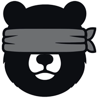

Todas as narrativas que iam destruir o S&P 500, e mesmo assim continuou a subir.
Doses de pânico. Clica numa e carimba-a no gráfico.
Faz uma previsão com prazo. O site guarda-a e, quando a data chegar, lembra-te de vir ver se acertaste.